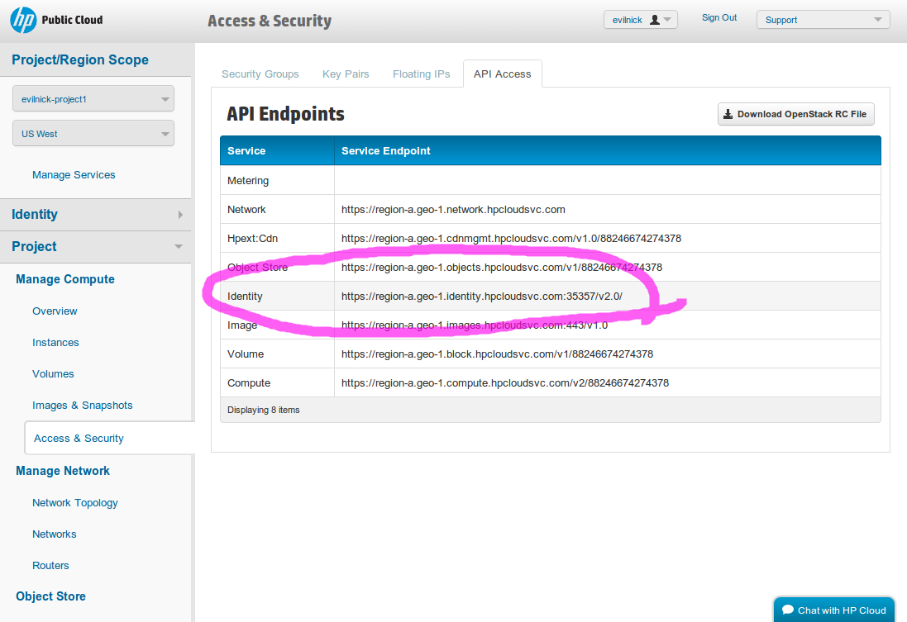

Configuring for HP Public Cloud
Due to changes in both the HPCloud Service and Juju, the current boilerplate configuration generated by running
juju generate-config contains some unnecessary items, and some omissions. For the moment it is easier to
replicate the config file shown below and populate it with the necessary values given in <angle brackets>.
## https://juju.ubuntu.com/docs/config-hpcloud.html
hpcloud:
type: openstack
tenant-name: <"your HPCloud project name">
username: <"your HPCloud username">
password: <"your HPCloud password">
auth-url: <The identity server for your project, e.g. https://region-a.geo-1.identity.hpcloudsvc.com:35357/v2.0/>
region: <availability zone + region - e.g. az-1.region-a.geo-1>
The items in angled brackets will need to be entered by you, and are explained below. You will find most of the relevant is accessible by logging in to the HP Cloud Console.
-
tenant-name:For HP Public Cloud, this is listed as the project name on various pages of the HP Cloud console. On the main landing page it is displayed in the area highlighted below.
username:Enter your HP Cloud login username.password:Enter your HP Cloud login password.auth-url:This is the Keystone url for authentication. It is given in the Project > Access and Security page, under the API access tab region:This is the longer format region name, including the availability zone. There are currently three availability zones in the US West region, and one in US East. You can use any of these provided you have activated the relevant services in the console. The format is to use the availability zone as a prefix to the region identifier, so you should enter one of these values:- az-1.region-a.geo-1
- az-2.region-a.geo-1
- az-3.region-a.geo-1
- az-1.region-b.geo-1
Note: HP make frequent updates and enhancements to their cloud service, and the user console. If the current version does not match the images and instructions here, you may at least be able to find the releavant information somewhere in the console. But please also file a bug so we can update this page!